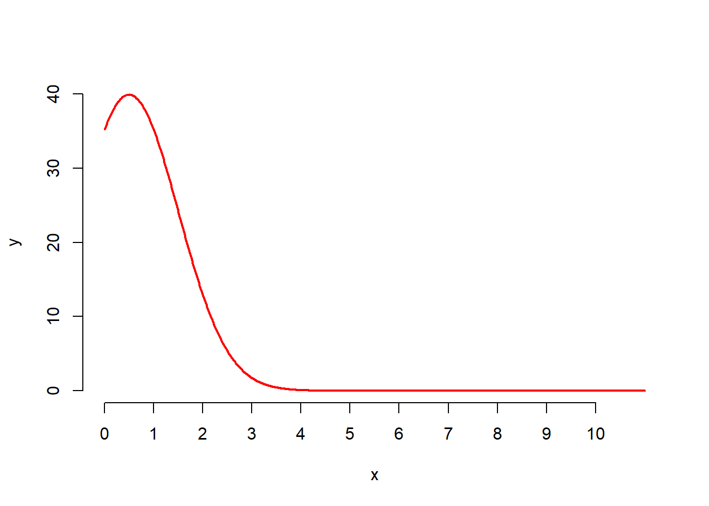
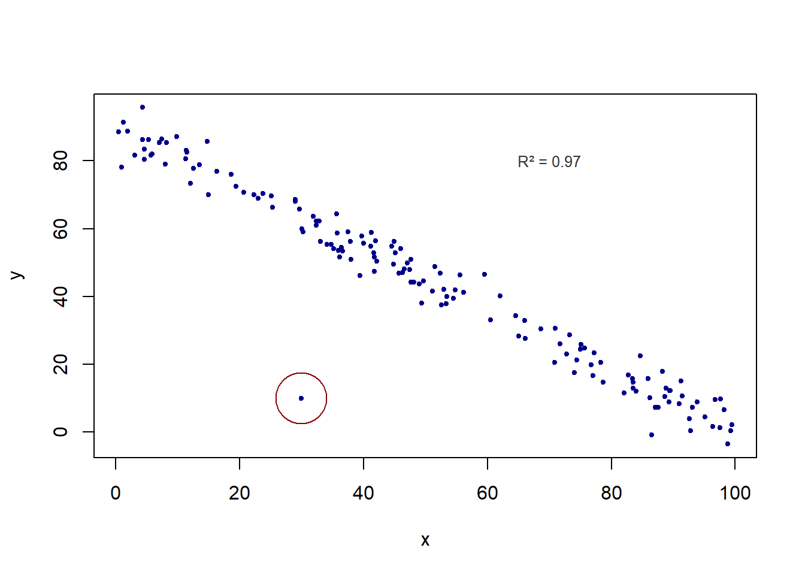

Examen
Introduction aux statistiques en géographie avec R
Durée : 1 heure
Jusqu’à deux réponses correctes par question. Noircir le cercle devant la bonne réponse.
L’accès au support https://louislrn.github.io/Initiation_R_stats/ est autorisé.
Questions sur R (10 pts / 0.5 ou 1 pts par question)
1) Laquelle (Lesquelles) de ces affirmations est(sont) correcte(s) ? (0.5 pts)
O R est un Environnement de Développement Intégré
O R est un langage et un logiciel
O Rstudio est un Environnement de Développement Intégré
O RStudio est un langage et un logiciel
2) Qu’est-ce qu’un package R ? (0.5 pts)
O Une fonction
O Une bibliothèque de fonctions
O Une commande
O Un répertoire de travail
3) Quel(les) fonctionnalités(s) apportent l’utilisation d’un projet Rstudio ? (0.5 pts)
O Le répertoire de travail est prédéfini
O Tous les packages utiles sont automatiquement chargés
O L’échange et la portabilité de votre travail est facilité
O La correction des erreurs de votre programme est automatique
4) Quelle ligne de commande permet de sélectionner les lignes 2 et 3 d’un dataframe “df” ? (0.5 pts)
O df[2,3]
O df[, c(2:3)]
O df[c(2,3) ,]
O df[2,3,]
5) Quelle(s) commande(s) permet(tent) de trier les valeurs de la variable “var” du data frame nommé “df” ? (1 pt)
O order(df$var)
O sort(df$var)
O df[order(df$var), ]
O df[sort(df$var), ]
6) Quelle fonction permet de joindre deux dataframes à l’aide d’un identifiant commun ? (1 pt)
O cbind()
O merge()
O rbind()
O aggregate()
7) Si on exécute ce code, quel mot s’affichera dans la console ? (0.5 pts)
x <- "3"
if (is.numeric(x)){
print("YOUPI")
}else{
print("WOW")
} O “YOUPI”
O “WOW”
O ERROR
O NA
8) Un objet sf…(1pt)
O contient des coordonnées géographique
O est composé de différents levels
O est un ensemble de points
O est un type spécifique de data frame
9) Le PIB d’un pays est une variable… (0.5 pt)
O Quantitative discrète
O Quantitative continue
O Qualitative nominale
O Qualitative ordinale
10) Quelle(s) fonction(s) permet(tent) de calculer un tableau de contingence ? (1 pt)
O table()
O rprop()
O levels()
O prop.table()
11) Quelle fonction utiliser pour visualiser la distribution d’une variable qualitative ? (1 pt)
O barplot()
O distr()
O hist()
O summary()
12) Quelle fonction du package mapsf permet d’afficher une couche géographique ? (0.5 pts)
O plot()
O sf()
O st_geometry()
O mf_map()
13) Quelle(s) fonction(s) permet(tent) de déterminer si une relation statistique existe entre deux variables qualitatives et de la quantifier ? (1 pt)
O chisq()
O t.test()
O lm()
O cor.test()
14) Dans le cadre du calcul de la corrélation linéaire (R de Pearson), laquelle de ces affirmation est fausse ? (0.5 pts)
O Les deux variables doivent être quantitatives
O La corrélation se base sur les rangs des valeurs
O La valeur de R varie entre -1 et 1
O Si R = 0 alors il n’y a aucune corrélation entre les variables
Questions de statistiques (10 pts)
15) Qu’est ce que le coefficient de variation ? Comment le calculer et l’interpréter ? Que permet-il de comparer ? (2pts)
16) Qualifiez cette forme de distribution. Quelles en sont les principales caractéristiques ? Quelle discrétisation serait appropriée ? (3pts)
17) Quel test permet de vérifier l’existence d’une relation statistique entre deux variables qualitatives ? Quel indicateur permet de vérifier la significativité de ce test ? (2pts)
18) Décrivez la relation entre x et y en vous appuyant sur le graphique : Quelle hypothèse pouvez vous formuler ? Comment modéliser cette relation et quelle fonction utiliser avec R ? Que pouvez vous dire de l’individu entouré par un cercle sur le graphique ? (3pts)
